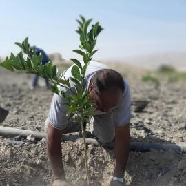
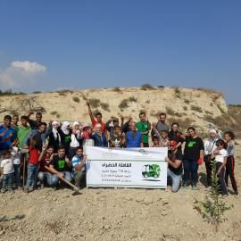

العربية لحماية الطبيعة تطلق نسخة جديدة من موقعها الالكتروني |

|
سيتمكن متابعو النسخة الجديدة من موقع "العربية" الذي يبث باللغتين العربية والانجليزية الاطلاع على الأحداث والحملات التي تعكف المنظمة على تنفيذها، كما سيكون بوسعهم المشاركة في التنفيذ والتطوع في مختلف المجالات عبر نماذج مخصصة لذلك، كما سيتمكن المتصفحون من المساهمة المالية في مشاريع المنظمة عبر تقنية "الدفع الالكتروني"، فضلاً عن الطرق التقليدية المتاحة للتبرع. إقرأ المزيد |
العربية لحماية الطبيعة تبرم اتفاقية مع الذراع الزراعي لـ"الجامعة العربية" |
أبرمت العربية لحماية الطبيعة اليوم الأربعاء (٩ تشرين أول\اكتوبر) مذكرة تفاهم مع المنظمة العربية للتنمية الزراعية لبحث أوجه التعاون بين المؤسستين؛ من أجل تعزيز قدرة الشعوب العربية على حماية واستدامة مواردها الطبيعية وتكريس سيادتها عليها، لا سيما تلك الدول الواقعة تحت الاحتلال أو المتأثرة بالنزاعات. إقرأ المزيد |
|
"ازرع صمودك ٣" تحصد أكثر من ٢٥ ألف شجرة لتثبيت مزارعي فلسطين |
شهدت حملة "ازرع صمودك" تفاعلاً شعبياً واسعاً للعام الثالث على التوالي، حيث حصدت الحملة التي أطلقتها الجمعية العربية لحماية الطبيعة الثلاثاء (٣ كانون الأول\ ديسمبر) من خلال مساهمات المواطنين عبر أثير "راديو حسنى" ما يمكّن الجمعية من زراعة أكثر من ٢٥ ألف شجرة في القدس المحتلة وعموم فلسطين. إقرأ المزيد |
|
بعد ١٣ عاماً.. مبادرة العربية لحماية الطبيعة تؤتي أكلها بمحاسبة "اسرائيل" عن انتهاكاتها البيئية في لبنان |
يذكر أن العربية لحماية الطبيعة بادرت -كمنظمة فاعلة في مواجهة الانتهاكات البيئية في العالم العربي- في إطلاق حملة لمحاسبة الاحتلال الصهيوني على تلويثه البحر في لبنان أعقاب حرب تموز ٢٠٠٦، وذلك عقب الطلب رسمياً من الاتحاد العالمي لصون الطبيعة لتبني القرار الذي أقرته جميع الدول حول محاسبة "إسرائيل" عن أسوء كارثة بيئية أحدثتها في الشرق الأوسط. إقرأ المزيد |
|
"العربية" و"إبداع البلقاء" تطلقان "حاكورة بيوضة٢" لزراعة ١٠ آلاف شجرة في السلط |
أطلقت العربية لحماية الطبيعة الجمعة ومؤسسة إبداع البلقاء (٢٥ تشرين أول\ اكتوبر) مشروع "حاكورة بيوضة ٢" لزراعة عشرة آلاف شجرة مثمرة متنوعة في ١٥ قرية في محافظة السلط، ويتطلع المشروع الذي ينفذ بالتعاون مع "نشميات بيوضة" إلى الاكتفاء الذاتي في بعض المحاصيل، ورفع دخل المزارعين، إلى جانب زيادة الرقعة الخضراء. إقرأ المزيد |
|
"ازرع وطن".. حملة مجتمعية لتمكين صغار المزارعين بالشراكة مع "راديو دهب" |
في اولى تجليات حملة "ازرع وطن"، غرست العربية لحماية الطبيعة 500 شجرة مثمرة في أراضي ثلاثة مزارعين في منطقة الفيحاء التابعة لمحافظة مادبا، ضمن نشاط زراعي اليوم السبت (23 تشرين ثاني\نوفمبر 2019) شارك به مجموعة من موظفي الشبكة العربية للإعلام (مزاج اف إم، وراديو دهب) ومتطوعون من الجامعة الأمريكية. إقرأ المزيد |
|
العربية لحماية الطبيعة تقدّم ١٦ محاضرة توعوية لنحو ٨٥٠ طالباً |
تناولت المحاضرات التي قدمتها ديار محيسن، ضابطة مشاريع في "العربية"، أهمية الزراعة ودورها في توفير مناخ بيئي سليم، كما طرحت أهم التحديات والمخاوف التي تتهدد البيئة في الأردن وفلسطين، إلى جانب الحث على أهمية تعاون الطلبة بصفتهم شركاء في مهمة إيجاد الحلول والمحافظة على البيئة. إقرأ المزيد |
|
العربية لحماية الطبيعة تعقد شراكة استراتيجية مع الجامعة الأردنية |
عبرت مريم الجعجع، مديرة العربية لحماية الطبيعة، عن اعتزازها بهذه الاتفاقية الاولى من نوعها، لافتة إلى أن هناك محاولة لمأسسة العلاقة بين المنظمة والكليات الجامعية، وأضافت أن كلية اللغات في الجامعة الأردنية أخذت المبادرة لبناء علاقة استراتيجية، ستتيح الفرصة لرفع الوعي بأهمية الخدمة المجتمعية، وضرورة الحفاظ على الأرض والزراعة. إقرأ المزيد |
|
مع حلول الموسم الزراعي 2019\2020.. "العربية" تزرع 700 شجرة بالتعاون مع "نوى" و"بنك الأردن" |

|
بين محمد قطيشات، مدير المشاريع التأهيلية في "العربية" أن الموسم الجديد يحمل أجندة من الأنشطة والفعاليات التي تستهدف العديد من المواقع وتشمل الأغوار الوسطى والجنوبية والشمالية بالإضافة إلى مادبا والعقبة ومعان واربد؛ بهدف زراعة ما يزيد عن 15,000 شجرة مثمرة جديدة على مدى ستة أشهر قادمة، متابعة لإنجازات القافلة الخضراء، البرنامج الذي أطلقته المنظمة قبل نحو سبع عشرة عاماً، ويسعى لتمكين صغار المزراعين الأردنيين وتعزيز الأمن الغذائي، والحدّ من التصحر. إقرأ المزيد |
العربية لحماية الطبيعة تستنكر تصريحات "نتنياهو" بشأن غور الأردن |
استنكر رامي برهوش، رئيس مجلس الإدارة في "العربية"، بأشد العبارات وعد نتنياهو الانتخابي، مشيراً إلى أنه يعتبر دليلاً إضافياً صارخاً على أطماع "اسرائيل" التوسعية في المنطقة، كما يأتي في سياق المحاولات الحثيثة لتصفية القضية الفلسطينية، في انتهاك سافر لكافة الشرائع والقوانين الدولية. إقرأ المزيد |
|
"البحوث الزراعية" بالشراكة مع "العربية" تنفذان تدريباً على تقنية Permaculture |

|
يتطلع المنظمون إلى تعميم هذا النموذج الذي يتسم بانخفاض كلفته وقدرته على النمو في بيئات جافة بأقل قدر من الماء إلى تعميمه في مناطق أخرى من المملكة تعزيزاً لفكرة الاكتفاء الذاتي لصغار المزارعين. إقرأ المزيد |
العربية لحماية الطبيعة تختتم مؤتمراً حافلاً في عمان بحضور ٤٥ مشاركاً من دول العالم |
اختتمت اليوم الإثنين (١١ تشرين الثاني \ نوفمبر 2019) فعاليات مؤتمر "التنمية والدعم الإنساني في ظل الحروب والصراع" بحضور ٤٥ مشاركاً ومختصاً من مختلف الدول العربية والعالمية، بدعوة من العربية لحماية الطبيعة والشبكة العربية للسيادة على الغذاء، بالشراكة مع منظمات المجتمع المدني من أجل فعالية التنمية (CPDE) في العاصمة الأردنية عمان. إقرأ المزيد |
|
خيمة "عنب الخضر" ومهرجان قلقيلية للجوافة.. حصاد مثمر لـ"المليون شجرة" في فلسطين |
شهدت خيمة "عنب الخضر" (سوق العنب الشعبي) جنوب بيت لحم مشاركة فاعلة للعربية لحماية الطبيعة، حيث تدفقت صناديق العنب الذي أنتجه مزارعو بلدة الخضر بدعم من برنامج "المليون شجرة في فلسطين" الذي تنفذه "العربية". إقرأ المزيد |
|
بدعم من البنك الاستثماري.. ٧٥٠ شجرة زرعتها "العربية" لصالح ٧ مزارعين |

|
أقامت العربية لحماية الطبيعة نشاطاً زراعياً في منطقة الشونة الشمالية الجمعة (١ تشرين الثاني\نوفمبر) ضمن برنامج القافلة الخضراء، زرعت خلاله نحو ٧٥٠ شجرة مثمرة متنوعة من الليمون والبرتقال والبوملي، بدعم من البنك الاستثماري. إقرأ المزيد |
خلال اجتماع دولي في روما.. "زعيتر": على العالم إنهاء الحروب في المنطقة إذا أراد النجاح في مكافحة التغير المناخي |

|
قالت رزان زعيتر، المنسق العام للعربية لحماية الطبيعة، رئيسة الشبكة العربية للسيادة على الغذاء، إن الحروب والصراعات تعطل الهياكل الاجتماعية والبيئية والموارد الطبيعية بشكل خطير، كما أنها تهدد قدرة المنطقة على التخفيف من تغير المناخ والتكيف معه، مشددة على أنه لا يمكن الحديث عن مكافحة التغير المناخي دون النظر إلى الأبعاد السياسية المرتبطة به. إقرأ المزيد |
بالشراكة مع "زين".. العربية لحماية الطبيعة تزرع ٥٠٠ شجرة في مادبا |
نظمت العربية لحماية الطبيعة بالتعاون مع زين للاتصالات نشاطاً زراعياً السبت (١٢ تشرين أول\ اكتوبر ٢٠١٩) في منطقة الفيحاء غرب محافظة مادبا، جرى خلاله زراعة ٥٠٠ شجرة متنوعة بين الزيتون والحمضيات واللوزيات، واستفاد من المبادرة 7 عائلات تضم ثلاثة أرامل وأيتام يعتمدون على حصاد أرضهم بشكل أساسي كمصدر للرزق. إقرأ المزيد |
|
العربية لحماية الطبيعة تقدم ورقة في اجتماعات "الجامعة العربية" |
.jpeg)
|
تضمنت المداخلة التي قدمتها "زعيتر" ملاحظات حول ضرورة إضافة أولوية منفصلة تعنى بمكافحة الجوع ودعم الصمود في المناطق التي تعاني من الصراعات والحروب والاحتلال، وليس التركيز فقط على الصدمات الطبيعية؛ منوهة إلى أن الصراعات هي السبب الأساسي لارتفاع معدلات انعدام الأمن الغذائي في المنطقة، كما ناقشت الورقة السياسات المتبعة حول حماية وتعزيز الموارد الطبيعية في المنطقة. إقرأ المزيد |
كادت أن تبيعها.. العربية لحماية الطبيعة تمكّن "أم صدام" من رعاية أرضها واستثمارها |
استفادت من المبادرة النوعية أرملة المزارع حسن محمد ذياب (أم صدام)، التي أوشكت وأبنائها على بيع أرضهم لعدم قدرتهم على استثمارها، وعبرت "أم صدام" عن سعادتها الغامرة بتمكنها من زراعة الأرض ورعايتها، لافتة إلى أن ذلك سيعود بالنفع الاقتصادي الكبير والمستدام عليها وعلى أولادها الأيتام. إقرأ المزيد |
|
الشبكة العربية للسيادة على الغذاء تبحث في عمّان خطة عملها المقبلة |
اختتمت الشبكة العربية للسيادة على الغذاء اجتماع هيئتها التنفيذية مساء السبت (٩ تشرين الثاني\ نوفمبر) في العاصمة الأردنية عمان، بحضور ١٤ عضواً في الشبكة من مختلف الأقطار العربية. إقرأ المزيد |
|
خلال اجتماعات IUCN في الكويت.. "العربية" تحذر من الآثار البيئية الناجمة عن الحروب والنزاعات في المنطقة |
طلبت زعيتر تقريراً رسمياً يوضح مبررات عدم تنفيذ الاتحاد الدولي لحماية الطبيعة لقرارات سابقة دعت إلى الالتفات إلى ما يسببه الاحتلال من تدمير للبيئة، والتحرك لاتخاذ إجراءات إزاءه، محذرة من أن الصمت تجاه الانتهاكات الإسرائيلية للبيئة يعتبر مشاركة في الجريمة. إقرأ المزيد |
|
القافلة الخضراء تحط في مادبا وتزرع 500 شجرة |
نظمت العربية لحماية الطبيعة نشاطاً زراعياً ضمن برنامج القافلة الخضراء السبت (٢ تشرين ثاني\ نوفمبر) جرى خلاله زراعة 500 شجرة مثمرة من الزيتون واللوزيات في منطقة الفيحاء غرب محافظة مادبا. إقرأ المزيد |
|
العربية لحماية الطبيعة تتحدث في اجتماعات "الاسكوا" في عمّان |
شاركت العربية لحماية الطبيعة ممثلة بمديرتها مريم الجعجع في الاجتماع الإقليمي لتعزيز الأمن الغذائي والمائي في المنطقة العربية، بتنظيم من لجنة الأمم المتحدة الاقتصادية والاجتماعية لغرب آسيا (اسكوا)، بحضور ٨٠ مشاركاً، من ممثلين لحكومات الدول العربية، ومندوبين من منظمات إقليمية ودولية مختصة. إقرأ المزيد |
|
"القافلة الخضراء" تحط في السلط وتغرس 300 شجرة بالشراكة مع "عوده" و"الأهلي" |
لا تتوقف "القافلة الخضراء" التي تقودها العربية لحماية الطبيعة عن مواصلة سيرها، حيث حطت في آخر نقطة لها في منطقة الصبيحي التابعة لمحافظة السلط شمال العاصمة الأردنية عمان، هناك حيث أقامت "العربية" نشاطاً زراعياً بالتعاون مع بنك عوده، وبالتنسيق مع مبادرة "نوى"، جرى خلاله زراعة 200 شجرة مثمرة من الحمضيات (7 أيلول\ سبتمبر 2019). إقرأ المزيد |
|
"العربية": نخشى أن تكون اجتماعات "الاقتصادي والاجتماعي" عبثية إذا لم تقدم حلولاً زراعية فعّالة |
وجهت رزان زعيتر، العضو المؤسس في العربية لحماية الطبيعة تساؤلاً مباشراً لوزير الزراعة ابراهيم الشحاحدة عن الأسباب التي آلت بالأردن إلى استيراده 80% من غذائه من الخارج، خلال مشاركتها في جلسات المجلس الاقتصادي والاجتماعي لمناقشة تقريره الثاني عن حالة البلاد (الثلاثاء ٢٤ أيلول\سبتمبر). إقرأ المزيد |
|
العربية لحماية الطبيعة تنفذ وصية المزارع "أبو علي الشطي" في الأغوار الوسطى |
نفذت العربية لحماية الطبيعة بالتنسيق مع الأهلية الزراعية وصية المزارع الأردني "أبو علي الشطي" الذي وافته المنية قبل أسابيع وأوصى بزراعة أرضه الواقعة في الأغوار الوسطى، واستقبل أبناء المتوفى وأحفاده فريق "العربية" ومتطوعيها بحفاوة كبيرة، معبرين عن سعادتهم الغامرة بزراعة أرضهم الموروثة بأشجار البرتقال. إقرأ المزيد |
|
اختتام الاجتماع الإقليمي للتحالف الشعبي العالمي للسيادة على الغذاء في عمّان |
اختتمت العربية لحماية الطبيعة الاجتماع الإقليمي (غرب آسيا وشمال إفريقيا) للتحالف الشعبي العالمي للسيادة على الغذاء (PCFS) في عمّان (١١تشرين الثاني\نوفمبر٢٠١٩)، بحضور تسع منظمات إقليمية إلى جانب سكرتيرة التحالف في الفلبين رودا غيتا. إقرأ المزيد |